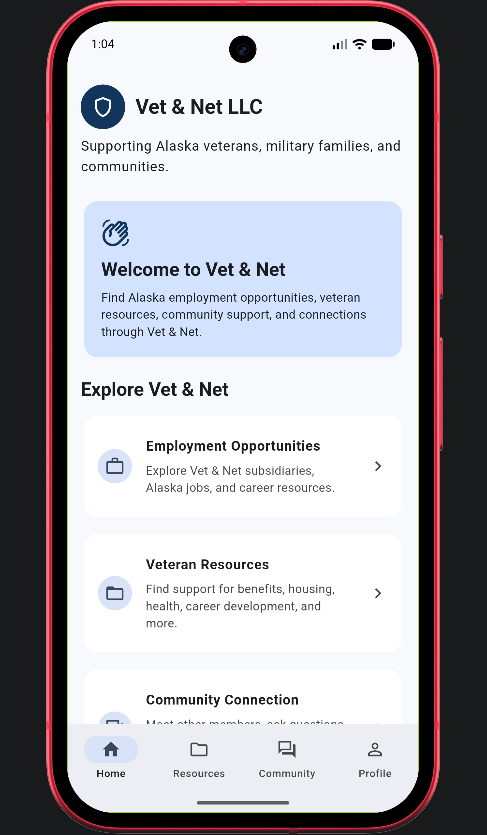
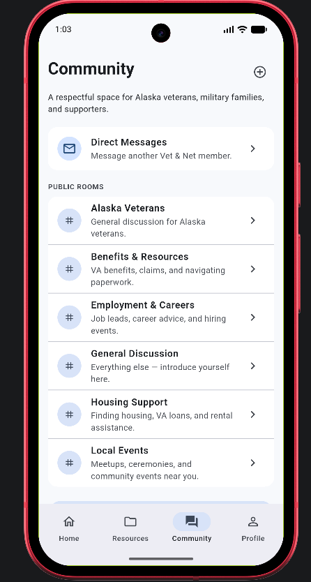
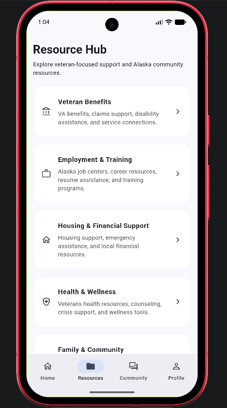
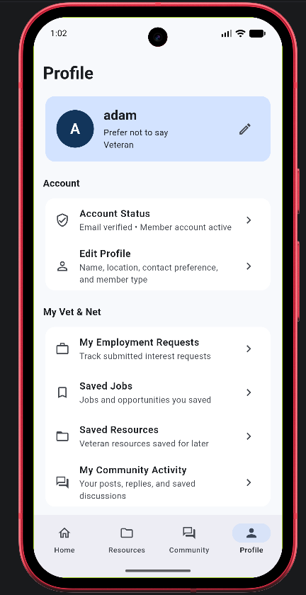

Community Rooms
Veterans can discover public community rooms or participate in secure private spaces built for specific groups and conversations.
CASE STUDY / 2026
A Flutter and Firebase mobile platform designed to help Alaska veterans discover resources, opportunities, and community support in one secure place.

THE MISSION
Vet & Net LLC was designed as a centralized digital platform for Alaska veterans. The app brings together community connection, local resources, employment support, and secure communication tools.
The goal is simple: reduce friction between veterans and the people, services, and opportunities that can help them move forward.
CORE FEATURES
Veterans can discover public community rooms or participate in secure private spaces built for specific groups and conversations.
Private one-to-one messaging supports meaningful and direct communication between members and staff.
Organized access to support resources, services, and local information relevant to Alaska veterans.
Veterans can browse Alaska-focused employment opportunities and express interest directly to moderators.
Firebase Authentication manages identity while Firestore rules protect member data and private community content.
Member, moderator, developer, and owner roles provide controlled access to tools, content, and administrative features.
APP EXPERIENCE



TECHNICAL FOUNDATION
VET & NET LLC